macOS · Kullanım rehberi · v0.2
PEPE
MacBook'un çentiğinde yaşayan, kodlama ajanlarının ne yaptığını gösteren ve senin yerine onlarla konuşan küçük bir yardımcı. Bu rehber uygulamanın bütün işlevlerini, nereden açıldıklarını ve sınırlarını anlatır.

01Genel bakış
Pepe nedir?
Claude Code, Codex, Cursor, Gemini CLI gibi ajanlar terminalde çalışırken sen çoğu zaman başka bir penceredesin. Pepe bu oturumları çentiğe taşır: ne yaptıklarını adım adım gösterir, izin istediklerinde haber verir, iş bitince havlar.
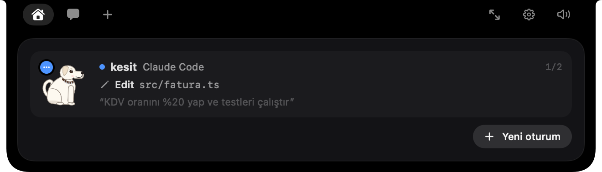
02Başlarken
Kurulum ve ajanlar
Pepe menü çubuğunda bir pati simgesiyle durur, Dock'ta görünmez (pencere açıkken hariç). Çentiği olmayan Mac'lerde ekranın üstüne sahte bir çentik çizer.
Ajanlar Pepe'ye hook'larla bağlanır: ajan bir şey yaptığında küçük bir betik bunu Pepe'ye bildirir. Bağlamak için menü çubuğundaki Claude Code'a bağla'yı, çentikteki Bağla kartını ya da Ayarlar → Ajanlar'ı kullan. Pepe yapılandırma dosyasına yalnızca kendi satırlarını ekler ve önce bir yedek (*.serce-yedek) alır.
| Ajan | Yazdığı dosya | Çentikte izin kartı |
|---|---|---|
| Claude Code | ~/.claude/settings.json | Evet, soru kartlarıyla birlikte |
| Codex | ~/.codex/hooks.json | Evet |
| Copilot CLI | ~/.copilot/hooks/serce.json | Evet (Pepe kapalıysa terminalde sorar) |
| Gemini CLI | ~/.gemini/settings.json | Hayır, oturum ve adımlar görünür |
| Cursor | ~/.cursor/hooks.json | Hayır, istekler ve düzenlemeler görünür |
| OpenCode | ~/.config/opencode/plugins/serce.js | Hayır, yalnızca olaylar |
| Diğerleri | Elle: serce-hook --agent <ad> <Olay> | — |
Claude Desktop'tan açılan Claude Code oturumları ayrıca tanınır. Pepe kapalıyken hook betiği sessizce çıkar; ajanı hiçbir zaman bekletmez.
03Ana ekran
Çentik ve oturumlar
Kapalıyken
Pepe çentiğin sol kanadında oturur. Sağ kanatta bir gösterge, önem sırasına göre durumu özetler:
- Turuncu “!”: bir izin ya da soru seni bekliyor.
- Yeşil ✓: bir iş az önce bitti.
- Mavi noktalar: çalışan oturum var (birden fazlaysa sayısı).
- Ekolayzer: müzik çalıyor.
Açmak
Fareyle çentiğin üstüne gel; bir an sonra açılır, fare çıkınca kapanır. İzin ya da soru gelirse kendiliğinden açılır ve cevaplayana kadar açık kalır. ⌃⌥Space ile de açıp kapatabilirsin. Üst çubukta soldan sağa: Ana sayfa, Sohbet, + (dosya bırakma), plan kullanımı, pencerede aç, ayarlar ve ses düğmesi.
Oturum kartları
Her kartta ajana göre renklenmiş bir Pepe, proje adı, ajan adı, adım sayacı (3/5), şu anki adım ve son komutun çıktısı görünür. Terminali kapanmış oturumlar kapalı etiketi alır, ayrı çalışma kopyasındakiler bir dal çipi taşır. Varsayılan olarak 3 kart görünür; +N oturum daha ile 8'e kadar açılır. Üç saattir hareketsiz ve seni beklemeyen oturumlar listeden düşer.

Oturum ayrıntısı: Sohbet ve Adımlar
Bir karta tıklayınca ayrıntı açılır. Claude Code oturumlarında iki görünüm vardır:
- Sohbet: oturumun konuşma geçmişi; senin mesajların saatleriyle, Claude'un cevapları biçimli metin olarak. Oturum çalışıyorsa altta canlı bir satır döner. Eski kısımlar Daha eskisini yükle ile gelir.
- Adımlar: her araç çağrısı sırayla; okunan dosyalar, komutlar ve çıktıları, düzenlemelerin satır satır farkı (kırmızı/yeşil), hatalar renkli.
Diğer ajanlarda son altı adımın canlı listesi ve ajanın son cevabı (Yanıt) görünür; dosya farkları satır numaralı ve renklendirilmiş, komutlar terminal görünümünde.


Sol sütundaki düğmeler: Yeni oturum (bu projede), Terminale git (Terminal ve iTerm2'de tam o sekmeye; Ghostty, Warp, kitty öne gelir; VS Code, Cursor, Windsurf, Zed proje klasörünü açar), terminali olmayan oturumlarda Terminalde aç (claude --resume ile), ve Oturumu kapat (dört saniye içinde ikinci tıklamayla onaylanır; ajan süreci durur, terminal sekmesi açık kalır).
Plan kullanımı
Üst çubuktaki Claude %67 · Codex %88 göstergesi aboneliğinin ne kadarını kullandığını gösterir. Ayarlar → Ajanlar → Plan kullanımı'ndan açılır (Claude için Pro/Max, Codex için Codex CLI gerekir). Tıklayınca 5 saatlik ve haftalık pencereler ile sıfırlanma süreleri çıkar. Yüzde 50'nin altı yeşil, 80'in altı turuncu, üstü kırmızı.
04Karar anları
İzinler ve sorular
Ajan bir komut çalıştırmak, dosya değiştirmek ya da web'e çıkmak için izin istediğinde çentik açılır, Pepe “!” ile uyarır ve izin isteği sesi çalar. Kartta ne istendiği (komut ya da fark) önizlenir.

| Düğme | Ne yapar |
|---|---|
| İzin ver | Bu isteğe izin verir. Kısayol: Return |
| Reddet | İsteği reddeder. Kısayol: Esc |
| Hep izin ver | Ajan bir kural önerdiyse (ör. bu komuta hep izin), onu kalıcı yapar. |
| ⚡ Otomatiğe geç | Yalnızca terminaldeki Claude Code oturumlarında: izni verir ve oturumu otomatik moda geçirir. |
| Terminalde yanıtla | Kararı terminale bırakır. |
Yaklaşık iki dakika cevap gelmezse kart kendiliğinden düşer ve ajan terminalde sormaya devam eder. Birden fazla istek varsa +N istek daha bekliyor yazar. ⌃⌥A seni doğrudan bekleyen uyarıya götürür.
Soru kartları
Claude Code sana soru sorduğunda (en fazla dört soru, her biri en fazla dört seçenek) çentikte seçenekler çıkar. Tek seçimlik sorularda seçince bir sonrakine geçilir; çok seçimlilerde birden fazlasını işaretleyebilirsin. Başka bir cevap yaz… alanına kendi cevabını yazabilirsin. Sonraki ve Gönder (Return) ile bitir.

05Terminalsiz devam
Oturuma çentikten yazmak
Oturum ayrıntısının altındaki kutuya yazdığın mesaj o oturuma gider; terminal kapalı olsa bile. Pepe arka planda Claude Code için claude -p --resume, Codex için codex exec resume, Gemini CLI için gemini --resume çalıştırır; adımlar ve cevap yine çentikte görünür.
- Sıraya alma: oturum o an çalışıyorsa mesajın bekler (“Sırada — oturum bitince gönderilecek”), iş bitince gönderilir. Geri al ile vazgeçebilirsin.
- Durdur: Pepe'nin yürüttüğü bir çalışmayı ■ düğmesiyle kesersin.
- Görseller: mesaja en fazla 5 görsel; 📎 ile seç, ayrıntının herhangi bir yerine sürükle ya da ⌘V ile yapıştır.
- Eğik çizgi komutları:
/yazınca öneriler çıkar (/compact,/review,/model… ve projendeki özel komutlar, beceriler). Tab ilkini tamamlar.
Başka ajana aktarmak
Bir oturumda çıkan sorunu ya da sonucu başka bir ajana devretmek için yazma kutusunun solundaki ↪ düğmesine bas. Açılan ekranda:
- İçerik: Son yanıt, Hata veren adım (komut ve çıktısıyla) ve Görev. Hata varsa hata ve görev, yoksa son yanıt kendiliğinden seçili gelir.
- Kime: yazılabilen başka bir oturum (önce aynı projedekiler) ya da aynı projede yeni bir Claude Code, Codex veya Gemini oturumu. Varsayılan hedef, aynı projedeki başka bir ajanın oturumu; yoksa farklı bir ajanla yeni oturum.
- Ne yapsın? alanına notunu yaz (“Bu hatayı düzelt”, “Bu planı gözden geçir”). Altta gidecek mesajın önizlemesi görünür; mesaj hangi projeden, hangi ajandan ve hangi klasörden geldiğini de söyler.
- Aktar: hedef çalışıyorsa mesaj sıraya girer, bitince gider. Kaynak oturum Cursor ya da Copilot gibi yazılamayan bir ajan olsa bile aktarabilirsin.

Aynısını sohbetten de yapabilirsin: “kesit'teki Claude'un bulduğu hatayı Codex'e gönder, düzeltsin”. Pepe önce oturumu okur, sonra mesajı iletir.
Mod, Model, Efor
Kutunun üstündeki üç çip, bu oturuma Pepe'den giden mesajların nasıl çalışacağını belirler ve oturum başına hatırlanır:
| Mod | Oturumdaki gibi · Sor · Düzenlemeleri kabul et · Otomatik · Plan (değişiklik yapmaz, yalnızca plan çıkarır) · Sorma · Tüm izinleri atla ⚠︎. Otomatik ya da Düzenlemeleri kabul et seçilirse terminaldeki oturum da bir sonraki izin isteğinde o moda geçer. |
| Model | Varsayılan · Fable · Opus · Sonnet · Haiku |
| Efor | Varsayılan · Düşük · Orta · Yüksek · Çok yüksek · En yüksek |
Codex ve Gemini oturumlarında çipler o ajana göre değişir. Codex'te Mod: Proje klasörüne yazar, Salt okunur, Tam erişim ⚠︎; Model listesi Codex hesabından gelir; Efor da var. Gemini'de Mod: Düzenlemeleri kabul et, Plan, Hepsini onayla ⚠︎; Efor yok.
06Başlatmak
Yeni ve paralel oturumlar
Yeni oturum düğmesi boş ana ekranda, oturum listesinin altında ve her oturumun ayrıntısında bulunur. Açılan formda:
- Ajan seç: Claude Code, Codex ya da Gemini CLI (kurulu olanlar).
- Proje seç: son oturumların ve hafızası olan projeler listelenir; Klasör seç… ile başka bir klasör, ya da Projesiz genel bir Claude oturumu.
- Görev alanına ne yapılacağını yaz.
- İstersen Ayrı çalışma kopyasında (git worktree) seçeneğini aç (Codex ve Gemini'de kopya
<proje>/.worktrees/altında açılır). Projede başka bir oturum zaten çalışıyorsa bu kendiliğinden açık gelir; iki ajan birbirinin dosyalarına karışmaz. - Mod, model ve eforu seç, Başlat'a bas. Terminal gerekmez; adımlar çentikte. Claude Code'da izinler de çentikte sorulur; Codex ve Gemini'de izinleri seçtiğin Mod belirler.
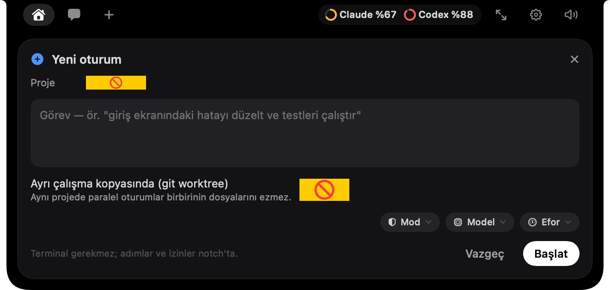
Aynı anda en fazla 4 oturum çalışır; bu sınırı Ayarlar → Hafıza ve bütçe'den 1 ile 8 arasında değiştirebilirsin.
07Asistan
Pepe ile sohbet
Üst çubuktaki 💬 sekmesi (ya da ⌃⌥C) Pepe'nin kendisiyle konuştuğun yerdir. Pepe çalışan oturumlarını, aktif pill'lerini ve seni (Ben dosyası) bilir.
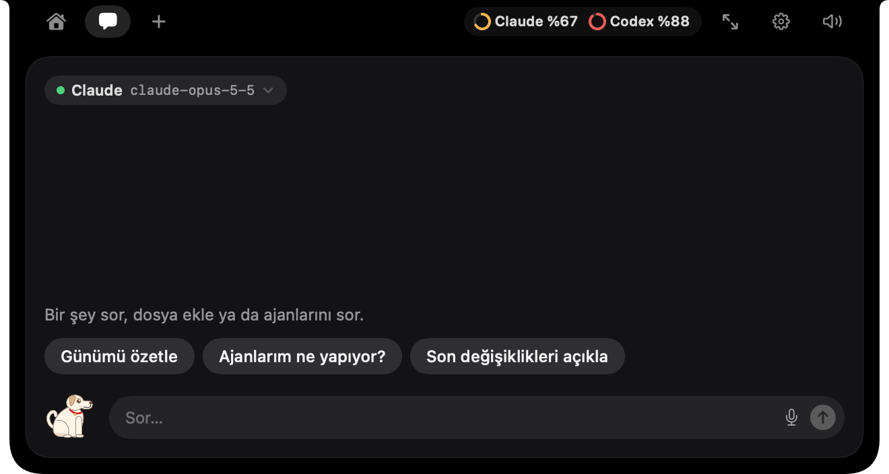
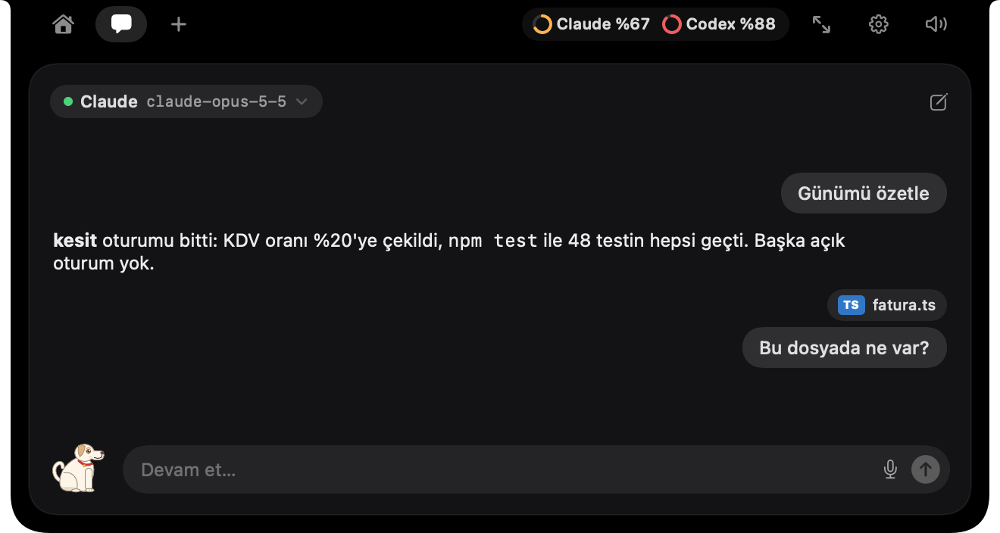
Modeller
Üstteki model etiketine tıklayıp seçersin: Claude (Opus 5.5 varsayılan, Sonnet 5.5, Haiku 5.5), OpenAI (gpt-5, gpt-5-mini), Gemini (2.5 Pro, 2.5 Flash), ve kendi makinende Ollama ya da LM Studio. Anahtarlar Ayarlar → Sohbet'ten girilir.
Kullanım
- Hızlı sorular: Günümü özetle, Ajanlarım ne yapıyor?, Son değişiklikleri açıkla.
- ⌘Return gönderir, ■ cevabı durdurur, ✎ yeni sohbet açar. 🎤 ile dikte edersin (sağ tıkla dil seç).
- Ekler: PDF, görsel, kod ve metin dosyaları. PDF'ler Claude ve Gemini'ye olduğu gibi, diğerlerine metin olarak gider.
- Son 60 mesaj saklanır ve uygulama yeniden açılınca geri gelir.
Pepe'nin araçları
Sohbette Pepe yalnızca cevap vermez, iş de yapar:
| Oturuma yaz | “kesit oturumuna yaz: fatura PDF'ini de yeniden üret” → mesaj o oturuma gider, terminal kapalı olsa da. |
| Oturum oku ve aktar | “kesit'teki Claude'un bulduğu hatayı Codex oturumuna gönder”: Pepe kaynağın görevini, hatasını ve son yanıtını okuyup hedefe iletir. |
| Oturum başlat | “tessera'da yeni oturum aç, giriş ekranındaki hatayı düzelt”; “Codex'le aç” ya da “Gemini'yle aç” dersen o ajanla (proje meşgulse ayrı çalışma kopyasında). |
| Hatırlatıcı | “yarın 10'da Tessera'yı App Store'a göndermemi hatırlat”, “20 dakika sonra hatırlat”; listele, iptal et. |
| Otomasyon | “hafta içi her sabah 9'da günün planını çıkar”; listele, iptal et. |
| Brifing | “günün özetini çıkar”, “geçen haftayı özetle”. |
| Proje hafızası | Bir projenin hafıza dosyasını okur ya da bütün hafızada arar. |
| Trello | Kartları listeler; kart eklemek ya da taşımak için çentikte senin onayını ister. |
| MCP ve web | Bağlı MCP sunucularının araçları (GitHub, Notion, Linear…) ve web araması. |
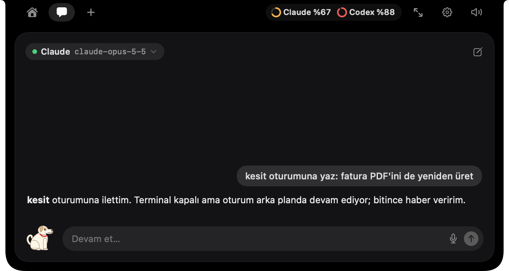

gh girişin varsa kendiliğinden bağlanır). Üst çubukta “N MCP · M araç” çipini görüyorsan araçlar açık demektir. Aksi hâlde Pepe yalnızca sohbet eder.Dosya bırakma (+)
Bir dosyayı çentiğe sürükleyince + sekmesi açılır ve Pepe dosyayı “yutar”. Sonra: Sor (eklerle sohbete geç), E-postayla gönder (Mail'de ekli bir taslak açar, kendisi göndermez) ya da Temizle.

08Kişisel katman
Hatırlatıcı, otomasyon, brifing
Hatırlatıcılar
Sohbetten ya da sesle kurulur. Zamanı gelince çentik açılır, ⏰ balonu ve zil sesiyle bir şerit çıkar: 10 dk erteler, Tamam kapatır. Kontrol yerel yapılır, token harcamaz. Liste Ayarlar → Kişisel → Hatırlatmalar'da.
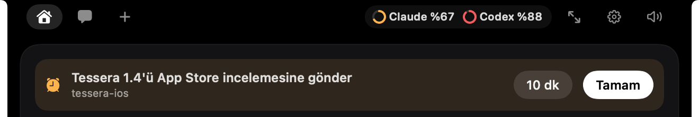
Otomasyonlar
Her gün ya da seçtiğin günlerde, belirlediğin saatte bir mesajı Pepe'ye kendiliğinden gönderir; cevap sohbet sekmesinde açılır. Örneğin “her sabah 10'da bana günün planını sor”. Mac o saatte uykudaysa açıldığında, en geç üç saat gecikmeyle çalışır; aynı gün iki kez çalışmaz.
Sohbetten kurabileceğin gibi Ayarlar → Kişisel → Otomasyonlar'dan da eklersin: mesajı yaz, saati ve günleri (Pzt…Paz; hiçbiri seçili değilse her gün) seç, Ekle. Her satırda aç/kapat, ▶ Şimdi dene ve 🗑 Sil var.
Sabah brifingi
Her sabah (varsayılan 09:30'dan sonra Mac'i ilk kullandığında) çentikte bir Günaydın kartı açılır: dün çalışılan projeler, kaldığın yerler, bugünkü hatırlatmalar, Trello kartların, GitHub ve Cal.com özeti. Pazartesileri geçen haftanın özeti eklenir. Yapay zekâ kullanmaz. Saatini, sesli okunmasını ve Şimdi göster'i Ayarlar → Kişisel → Sabah brifingi'nde bulursun.
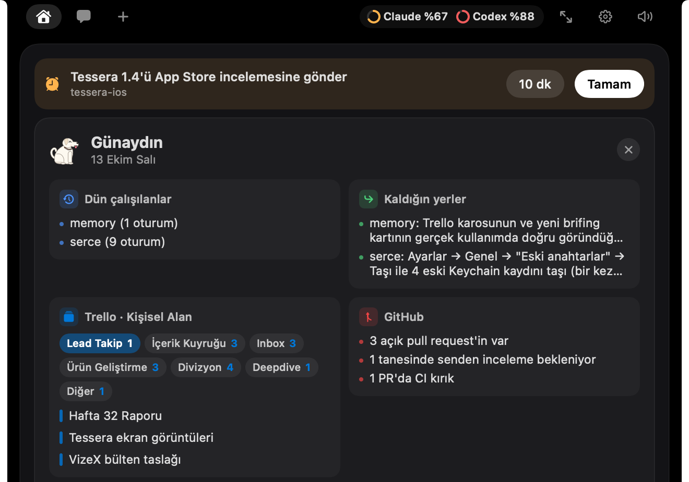
Haftalık özet
Ayarlar → Haftalık özet: oturum, adım, verilen ve reddedilen izin, cevaplanan soru sayıları; yedi günlük grafik, en çok çalışılan projeler ve ajan dağılımı. İçerik saklanmaz, yalnızca sayılar.
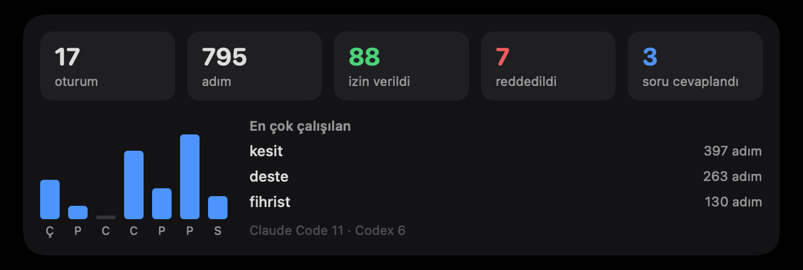
09Bağlam
Proje hafızası ve “Ben”
Pepe her proje için bir markdown dosyası tutar: ~/Library/Application Support/Serce/Hafiza/<proje>.md. Bölümleri: Özet, Durum, Sıradaki, Kararlar, Notlar, Oturumlar. Dosyayı elle de düzenleyebilirsin; eklediğin bölümler korunur.
- Oturum günlüğü: her oturumun istekleri, düzenlenen dosyaları ve komutları (✓/✗) yapay zekâsız yazılır. Son 15 oturum dosyada kalır, eskileri
.arsiv.md'ye taşınır. - Özet güncellemesi: oturumda anlamlı bir iş yapıldıysa Durum, Sıradaki ve Kararlar küçük bir modelle (varsayılan Haiku) güncellenir. Günlük bütçe varsayılan $0.10; 0 yaparsan kapanır.
- Yeni oturumlara özet: Claude Code oturumu başlarken projenin yaklaşık 400 token'lık kısa özeti ajana verilir.
- Kullanım tablosu: Ayarlar → Hafıza ve bütçe'de bugünkü çağrılar, token ve dolar karşılığı amaç amaç (Sohbet, Ses, Proje hafızası, Arka plan ajanı).
Ben dosyası (Hafiza/_ben.md) seni anlatır: Hakkımda, Kurallarım, Tercihler. Her sohbet ve sesli cevapta Pepe'nin bağlamına eklenir. Ayarlar → Kişisel → Ben → Aç.
10Entegrasyonlar
Pill'ler
Pill'ler ana ekranın sağında iki sütunlu çipler olarak durur; ilki her zaman Ajanlar. Birine tıklayınca kartı solda açılır. Dikkat isteyen bir durum varsa çipte turuncu nokta yanar. En fazla 5 pill aynı anda aktif olur; Ayarlar → Aktif pill'ler'den seçilir, anahtarlar da orada girilir. Servisler dakikada bir yenilenir. ⌃⌥P bir sonraki pill'e geçer.
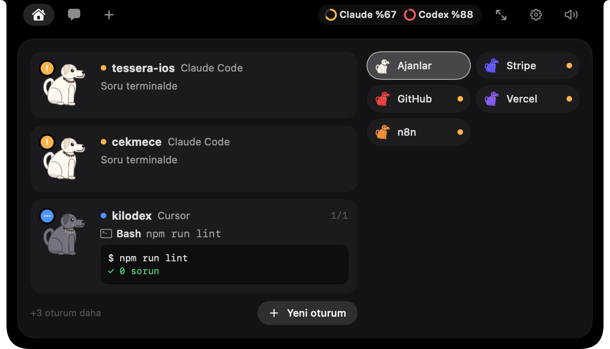
| Pill | Gösterdiği | Uyarır | Gerekli |
|---|---|---|---|
| Stripe | Bugünkü gelir, ödeme sayısı, son 4 ödeme | Başarısız ödeme | Gizli ya da kısıtlı anahtar |
| GitHub | Açık PR'lar, inceleme bekleyenler, CI durumu | Kırık CI, inceleme isteği | Token ya da gh girişi |
| Vercel | Son deploy'lar: Hazır, Hata, Derleniyor… | Hatalı deploy | Token (+ takım kimliği) |
| Cal.com | Sıradaki görüşme ve yaklaşanlar | 10 dk içinde başlayan | API anahtarı |
| n8n | Aktif akışlar, bugünkü çalışmalar | Başarısız çalışma | Adres + API anahtarı |
| Resend | Bugün gönderilen e-postalar ve durumları | Geri dönen, şikâyet | API anahtarı |
| Notion | Bugün düzenlenen sayfalar | — | Entegrasyon token'ı |
| Trello | Liste çipleri, kartlar, geciken kartlar | Geciken kart | ~/.config/trello/.env |
| Spotify · Apple Music | Kapak, şarkı, ilerleme, karıştır, tekrar, ses | — | macOS otomasyon izni |

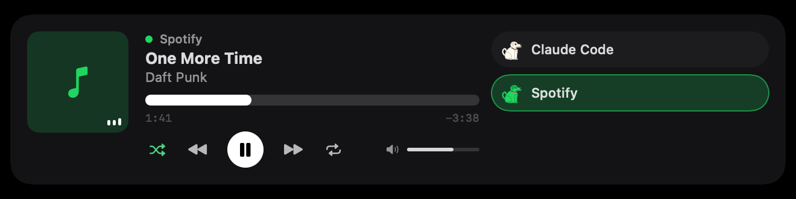
MCP sunucuları
Ayarlar → MCP: GitHub varsayılan olarak açık; Notion, Linear, Sentry, Vercel, Stripe, Atlassian ve Context7 tarayıcıdan tek tıkla bağlanır. Claude Code, Claude Desktop, Cursor ve Codex'te tanımlı sunucular kendiliğinden içe alınır; Sunucu ekle… ile kendi sunucunu eklersin. Yalnızca okuyan araçlar doğrudan çalışır, yazan araçlar çentikte izin ister.
11Sesli asistan
« OK Pepe »
Ayarlar → Ses → Sesli asistan açık ile açılır; mikrofon ve konuşma tanıma izni ile bir Anthropic anahtarı gerekir. Sonra “OK Pepe”, “Okey Pepe” ya da “Hey Pepe” deyip sorunu söylersin; Pepe havlayarak duyduğunu belli eder. ⌃⌥S uyandırma sözü olmadan dinletir.
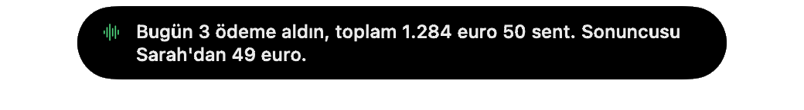
- Bir buçuk saniye kadar sustuğunda komut biter. Cevap soruyla biterse tekrar “OK Pepe” demeden cevap verebilirsin.
- Örnekler: “Stripe'ta bugün ne kazandım?”, “GitHub yerine Stripe koy”, “biraz Daft Punk çal”, “Enzo'ya görselin hazır olduğunu yaz” (yalnızca taslak açar), “izni ver”, “terminali aç”, haber, hava durumu.
- Sohbetteki bütün araçlar (hatırlatıcı, otomasyon, oturuma yazma…) sesle de çalışır.
- Ses Mac'in en iyi Türkçe sesiyle okunur; kadın/erkek ve perde ayarlanır, istersen ElevenLabs bağlanır. Dil: Türkçe ya da İngilizce.
- Konuşma tanıma mümkünse cihazda yapılır, ses kaydı hiçbir yere gönderilmez; yalnızca tanınan metin Anthropic'e gider.
12Pepe'nin kendisi
Karakter ve sesler
Pepe ruh hâliyle durumu anlatır: oturum yokken uyur, çalışırken hareketlenir, bir şey beklerken uyarır, iş bitince sevinir, müzik çalarken dans eder. Gözleri imleci izler. İşlemciyi yormamak için boşta kıpırdamaz; tıklayınca zıplar.
Gardırop
11 kıyafet: Sade Pepe, Bere, Atkı, Güneş gözlüğü, Taç, Kulaklık, Papyon, Parti şapkası, Fes, Yılbaşı şapkası, Çiçek. Varsayılan Mevsime göre: yılbaşında şapka, kışın atkı, baharda çiçek, yazın gözlük. Pepe'ye sağ tıkla (Gardırop), ⌃⌥W'ye bas ya da Ayarlar → Karakter'e git.
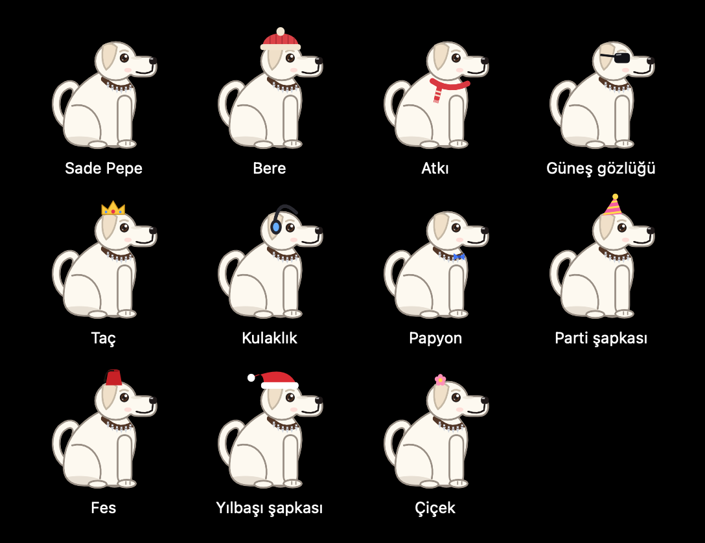
Masaüstü Pepe
Pepe'yi çentikten aşağı sürükle (ya da ⌃⌥D, sağ tık → Masaüstüne gönder): masaüstünde oturur, yeri hatırlanır. İzin beklendiğinde çentiğe uçar, sonra döner. Bir pencerenin üstüne bırakırsan o pencerenin ekran görüntüsünü alıp sohbete ekler (Ekran Kaydı izni gerekir). Çift tıklayınca ya da çentiğe geri sürükleyince eve döner.
Sesler
| Havlama | Soru geldiğinde, « OK Pepe » duyulduğunda |
| İzin isteği | İzin istendiğinde, hatırlatma ve otomasyon zamanında |
| İş bitti | Bir oturum bittiğinde |
| Dürtme | Pepe'ye tıkladığında |
| Selam | Uygulama açılırken (“hav hav!”) |
| Dosya bırakma · Fırlayış · Hata | Masaüstü Pepe'nin hareketleri ve başarısız ekran görüntüsü |
Sesler dosyasızdır, açılışta sentezlenir. Kendi sesini koymak için ~/Library/Application Support/Serce/Sesler/ klasörüne sesin adıyla bir dosya bırak (ör. done.wav; wav, mp3, aiff, m4a). Ayarlar → Karakter → Sesler'de her birini ▶ ile dinlersin. Sesleri kapatmak için ⌃⌥M ya da üst çubuktaki hoparlör.
13Hızlı erişim
Kısayollar ve menüler
Genel kısayollar her uygulamadayken çalışır; Ayarlar → Kısayollar'dan tıklayıp yeniden kaydedebilirsin.
| ⌃⌥Space | Çentiği aç / kapat |
| ⌃⌥C | Sohbeti aç |
| ⌃⌥A | Bekleyen uyarıya git |
| ⌃⌥T | Son oturumun terminaline git |
| ⌃⌥P | Sonraki pill |
| ⌃⌥M | Sesi aç / kapat |
| ⌃⌥D | Pepe'yi masaüstüne gönder / eve çağır |
| ⌃⌥W | Gardırobu aç |
| ⌃⌥S | Pepe'ye konuş (« OK Pepe » demeden) |
Kartlarda: Return izin ver ya da gönder, Esc reddet, ⌘V görsel yapıştır, Tab komutu tamamla, ⌘Return sohbette gönder.
Menü çubuğu ve pencere
Pati simgesinin menüsü: Claude Code bağlantısı, Sesler, Girişte başlat, Pencerede aç, Ayarlar… (⌘,), Demo göster, Pepe'den çık (⌘Q; bekleyen izinler önce terminale devredilir).
Pencerede aç, çentiğin içeriğini büyütülebilir normal bir pencerede gösterir (12 oturuma kadar). Pencere açıkken Pepe Dock'ta ve ⌘Tab'da görünür.
14Güven
Gizlilik ve veriler
- Yerel sunucu: hook'lar yalnızca bu Mac'teki
127.0.0.1:47823adresine, gizli bir anahtarla (Serce/token, yalnızca sana okunur) gelir. Dışarıdan erişilemez. - Anahtarlar: API anahtarları
~/Library/Application Support/Serce/anahtarlar.jsondosyasında, yalnızca senin okuyabileceğin izinlerle saklanır (gh ve Claude Code gibi). Eski sürümlerden kalanlar Ayarlar → Genel → Eski anahtarlar → Taşı ile aktarılır. - Ağ: Pepe yalnızca anahtarını girdiğin servislere bağlanır. Brifing, hatırlatma, otomasyon zamanlaması, oturum günlüğü ve haftalık özet yapay zekâ kullanmaz.
- Yapılandırma dosyaları: ajan ayarlarına dokunmadan önce bir kez yedek alınır, yalnızca Pepe'nin satırları değişir; geçersiz bir dosyaya hiç dokunulmaz.
- İzinler yalnızca gerektiğinde istenir: mikrofon ve konuşma tanıma (dikte, ses), Kişiler (isimle e-posta), Otomasyon (müzik, terminal), Ekran Kaydı (masaüstü Pepe ile pencere görüntüsü).
Pepe'nin dosyaları
Hepsi ~/Library/Application Support/Serce/ altında:
| Hafiza/ | Proje hafızaları, _ben.md, arşivler |
| sohbet.json | Son 60 sohbet mesajı |
| hatirlatmalar.json · otomasyonlar.json | Hatırlatıcılar ve otomasyonlar |
| haftalik.json · kullanim.json | Haftalık sayılar, token ve maliyet kullanımı |
| mcp.json | Eklediğin MCP sunucuları |
| Sesler/ · Projesiz/ | Kendi seslerin, projesiz oturumların klasörü |